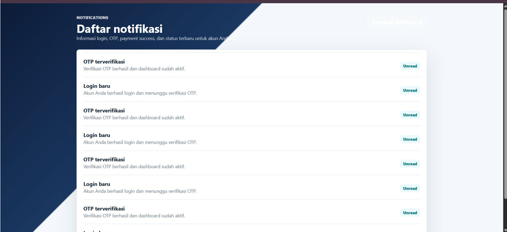
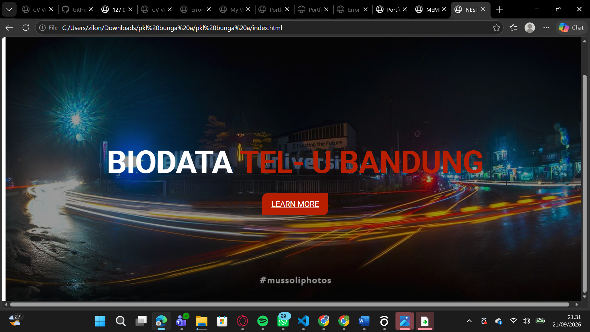
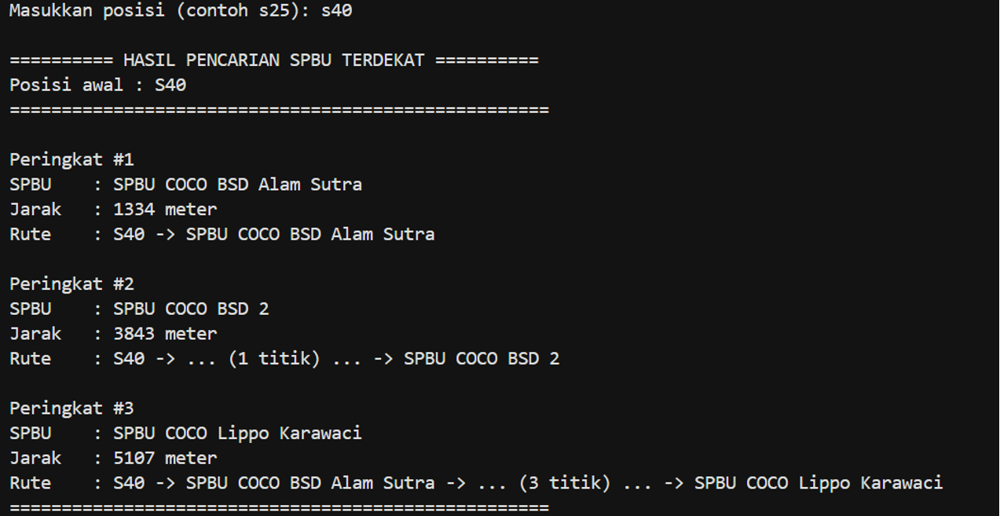

HELLO!
Saya Bunga Apriyanti.
Mahasiswa Teknik Informatika
Mahasiswa semester 3 program studi Teknik Informatika di Universitas Tarumanagara dengan fondasi keahlian teknis dari jurusan Rekayasa Perangkat Lunak (RPL). Memiliki pengalaman magang dalam pengembangan website (HTML, CSS, PHP) dan desain grafis. Disamping latar belakang IT, saya memiliki pengalaman ekstensif dalam bidang sales, pelayanan pelanggan, dan mengelola bisnis online secara mandiri. Kombinasi kemampuan teknis dan pengalaman interaksi langsung dengan konsumen membentuk saya menjadi individu yang adaptif, komunikatif, dan memiliki kemampuan problem-solving yang tajam. Saat ini, saya sangat antusias mencari peluang magang untuk mengaplikasikan ilmu IT kontribusi nyata bagi perusahaan.
Lihat ProjectProject
Beberapa pengalaman dan project saya
01. Backend
Project membuat Digital Banking
Dalam project ini saya membuat Notification Model , Setting Model, Notification Controller, SettingController Notification View, Setting View

02. Magang Tel-U University
Project dan tugas perkuliahan yang berkaitan dengan Database dan Website
Project magang ini saya mengerjakan seluruh biodata telkom university termasuk fakultas, ruangan, serta ketersediaan alat yang tersedia di ruangan ruangannya , keluar masuk barang dll

03. Struktur Data
Project Struktur Data mengenai Graph SPBU Pertamina Retail dari jarak terdekat UNTAR.
Pada project ini digunakan konsep graph dan algoritma Dijkstra untuk mencari jarak terpendek.

Education
SD Negeri Cengkareng Timur 19 Petang
[2012] - [2018]
SMP Negeri 248 Jakarta]
[2018] - [2021]
SMK Telkom Jakarta]
[2021] - [2024]
Universitas Tarumanagara
Teknik Informatika · 2025 - sekarang
Saat ini sedang mempelajari pemrograman dan pengembangan website.